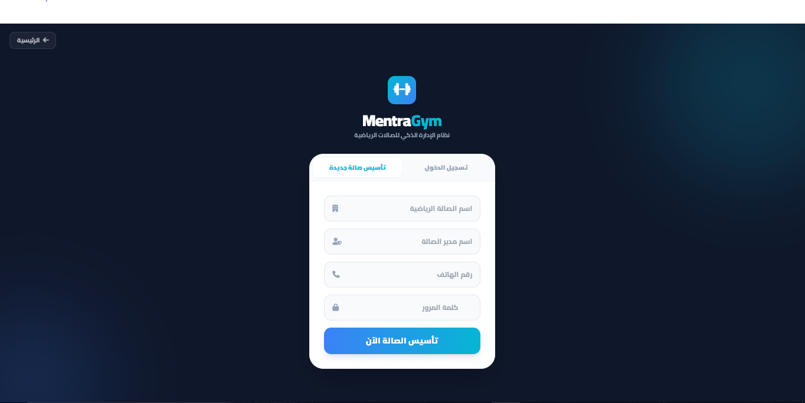
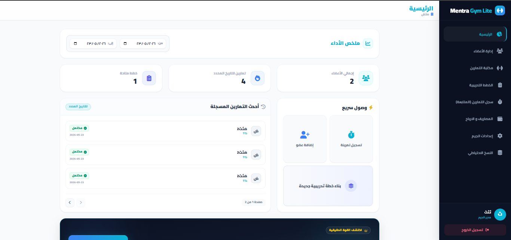
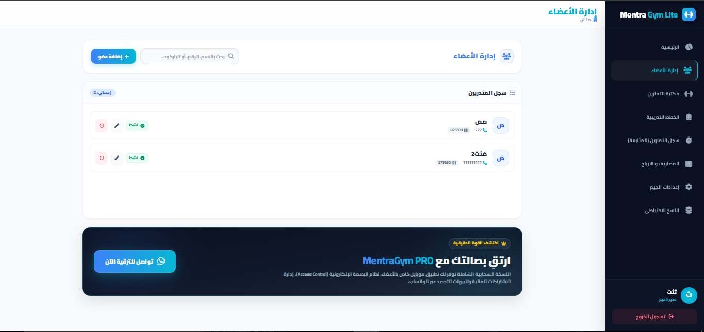
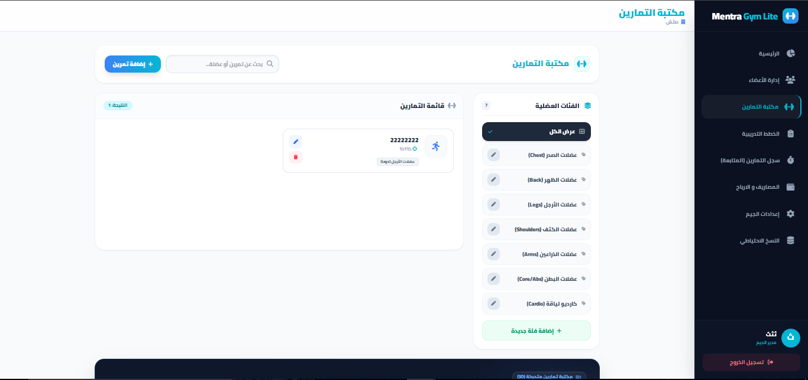
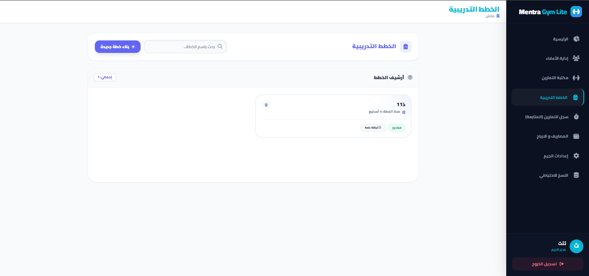
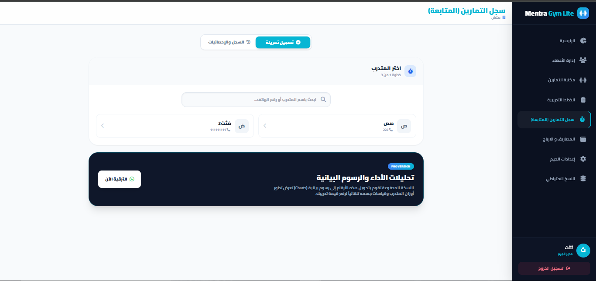
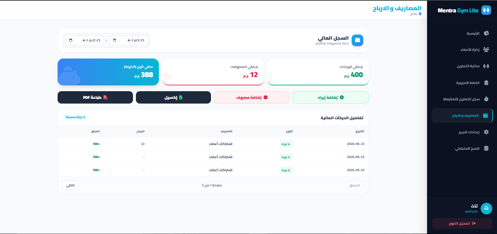
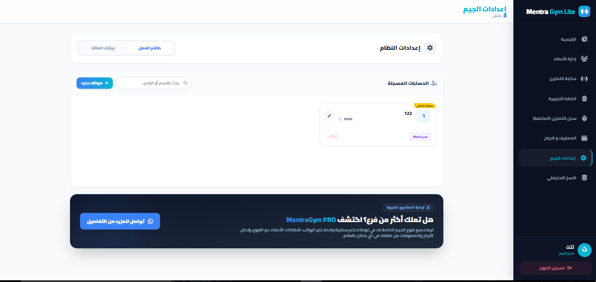
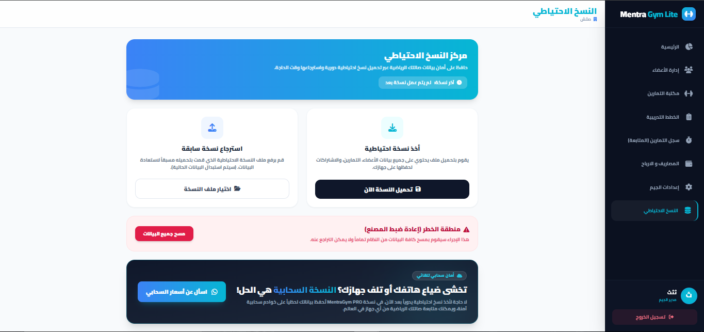

البداية وتأسيس الجيم
شاشة subscriptions هي بوابة عبورك للنظام. نظراً لأن النظام يعمل (Offline)، ستقوم هنا بإنشاء "قاعدة بيانات محلية" داخل متصفحك.
- تأسيس الصالة لأول مرة باسمك ورقم هاتفك.
- ميزة "الدخول السريع" التي تتذكر حسابك وتسمح بالدخول بكلمة المرور فقط.

لوحة التحكم الرئيسية
شاشة main تعطيك نظرة عامة (Birds-eye view) على وضع الجيم الحالي لمدير الصالة.
- إحصائيات سريعة: عدد الأعضاء النشطين، والاشتراكات المنتهية.
- ملخص الإيرادات والمصروفات.
- إمكانية التنقل السريع عبر القائمة الجانبية الذكية.

إدارة الأعضاء والاشتراكات
شاشة members هي العصب الرئيسي لموظف الاستقبال لضبط اشتراكات اللاعبين.
- تسجيل بيانات العضو الجديد مع صورته (اختياري).
- تحديد تواريخ بداية ونهاية الاشتراك، وتلوين الحالات (نشط/منتهي).
- محرك بحث سريع للوصول للعضو برقم الهاتف أو الاسم.

تأسيس مكتبة التمارين
في شاشة exercises، يقوم الكابتن ببناء القاموس الخاص بتمارين الجيم لاستخدامها لاحقاً في الخطط.
- إضافة تمارين مقسمة حسب العضلة (صدر، ظهر، أرجل، إلخ).
- يمكن إضافة رابط فيديو يوتيوب يوضح الأداء الصحيح للتمرين.

إنشاء الخطط التدريبية
شاشة plans تسمح للمدرب بإنشاء قوالب جاهزة (Templates) مثل خطة Push/Pull/Legs أو خطة تضخيم.
- سحب التمارين من المكتبة وإضافتها للأيام التدريبية.
- تخصيص عدد المجموعات (Sets) والتكرارات (Reps) لكل تمرين.
- تعيين الخطة لعضو معين ليبدأ بتنفيذها.

سجل التمارين والمتابعة الحية
شاشة tracking هي الأهم للمدربين داخل صالة الجيم (متوافقة جداً مع الموبايل).
- اختيار العضو والبدء في تسجيل أدائه في يومه التدريبي الحالي.
- تسجيل الأوزان التي رفعها لمقارنتها لاحقاً وتتبع التطور التقدمي.
- مؤقت زمني (Timer) للراحة بين المجموعات.

الإدارة المالية والأرباح
شاشة finances مخصصة لمدير الجيم لضبط الحسابات ومعرفة الأرباح الصافية.
- تسجيل المصروفات اليومية (كهرباء، صيانة، رواتب).
- تسجيل الإيرادات (اشتراكات، مبيعات بار).
- حساب صافي الربح بشكل أوتوماتيكي.

الإعدادات وطاقم العمل
شاشة settings تتيح للمالك إدارة فريقه وتعديل بيانات الجيم الأساسية.
- إضافة حسابات للمدربين وموظفي الاستقبال بكلمات مرور مشفرة.
- نظام صلاحيات (RBAC) يمنع موظف الاستقبال من رؤية الحسابات المالية مثلاً.
- تعديل اسم الجيم واسم المدير ورقم الهاتف.

النسخ الاحتياطي للأمان
خطوة حيوية! شاشة backup تضمن عدم ضياع بياناتك لأنها محفوظة في المتصفح.
- تصدير البيانات (Export) في ملف JSON وحفظه على جهازك أو فلاش ميموري.
- استرجاع البيانات (Import) في حالة تغيير اللابتوب أو مسح المتصفح.
- زر الطوارئ (إعادة ضبط المصنع) لمسح النظام بالكامل والبدء من الصفر.